0
初来人间
出生 · 六月盛夏
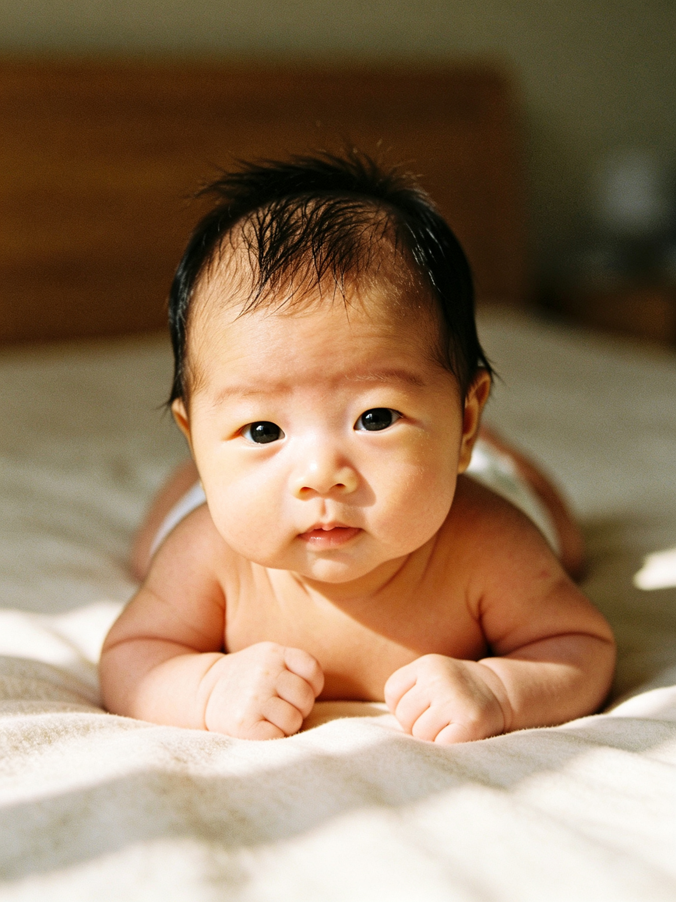
六月十八日，上午九点十二分，你来到人间。护士说你是当天哭声最响亮的宝宝，爸爸第一次抱你的时候，手在发抖。满月那天，外婆端详了你很久，说眉眼像妈妈，下巴像爸爸——像谁不重要，从此我们的人生里，多了一个要用一生去爱的人。
献给我们的孩子
成 长 时 光 录
二〇〇七 — 二〇二五 · 杭 州
十八年前的那个夏天，你来了，带着一声响亮的啼哭，点亮了我们所有的日子。
我们曾以为，是我们牵着你的手认识世界。后来才明白，是你带着我们，把世界重新认识了一遍。
这一条时间线里存着的，是时光替我们留住的证据：每一次跌倒，每一回大笑，每一个微不足道、却弥足珍贵的瞬间。
孩子，愿你无论走到哪里，都记得——有人在最初的地方，爱你如初。
—— 爱你的爸爸妈妈
0 — 1 岁 · 你来到人间
出生 · 六月盛夏

六月十八日，上午九点十二分，你来到人间。护士说你是当天哭声最响亮的宝宝，爸爸第一次抱你的时候，手在发抖。满月那天，外婆端详了你很久，说眉眼像妈妈，下巴像爸爸——像谁不重要，从此我们的人生里，多了一个要用一生去爱的人。
周岁 · 蹒跚学步
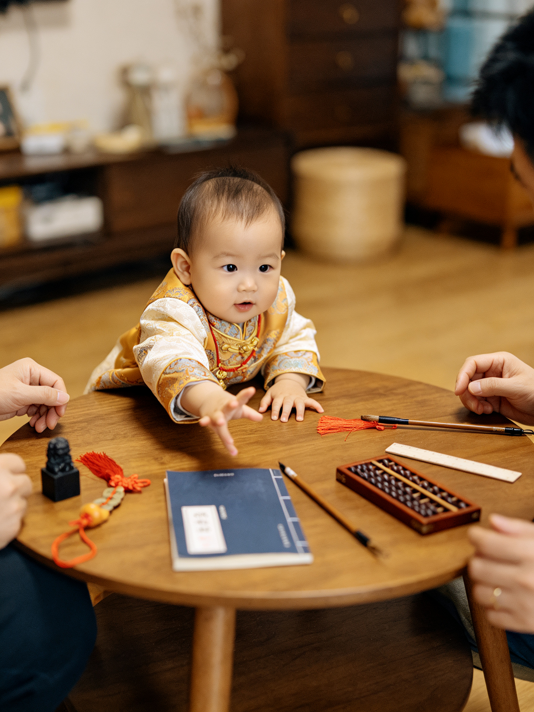
周岁宴上抓周，你绕过印章和算盘，一把抓住了毛笔——爷爷高兴得当天多喝了两杯。那年冬天，你扶着茶几迈出了人生的第一步，全家人的欢呼声，把楼下的狗都吓醒了。
2 — 3 岁 · 世界开始变大
两岁 · 泡泡与蛋糕
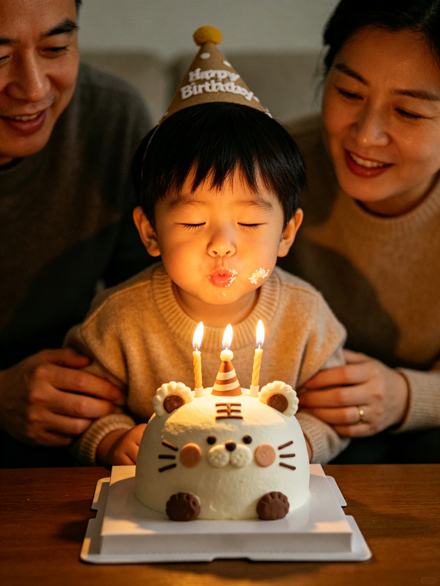
两岁生日，你吹蜡烛时鼓起的小脸涨得通红，奶油抹了满脸，还煞有介事地许了个愿——后来问起，你说愿望是“天天都能吃蛋糕”。春天的公园里，你追着泡泡跑，笑声比泡泡还轻、还亮。
三岁 · 背上小书包
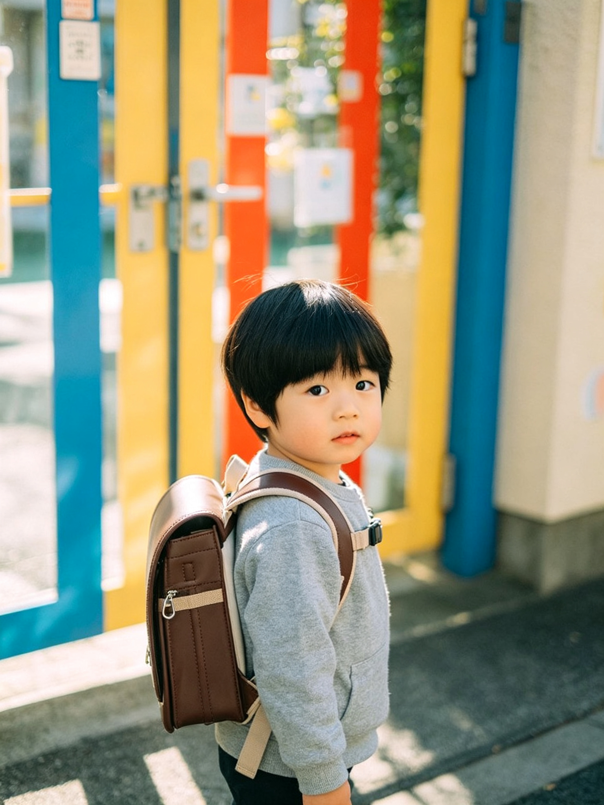
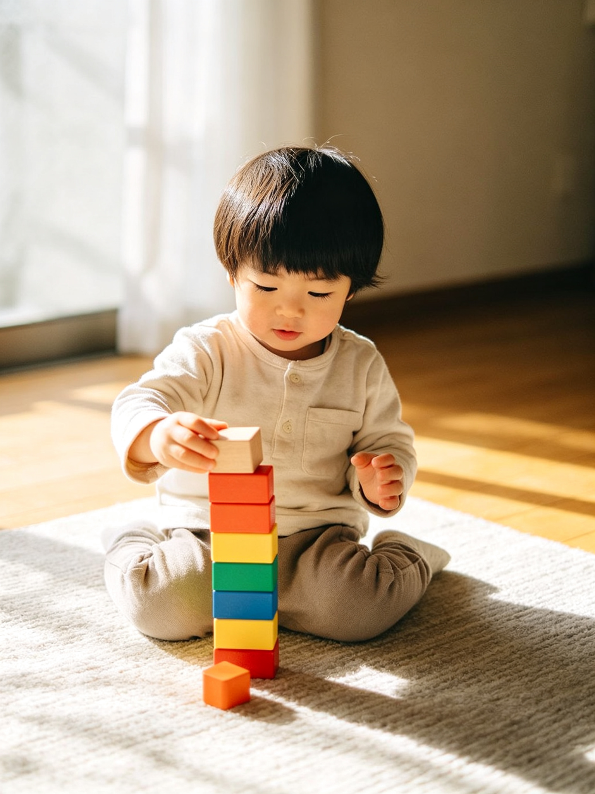
九月一号，你背着小书包站在幼儿园门口，回头看我们时眼里有泪光，却没有哭。老师说，你是全班唯一一个没哭的男孩。回家后你用积木搭了一座“幼儿园”，认真地说，以后每天都要去。
4 — 6 岁 · 风一样的日子
四岁 · 夏天与风
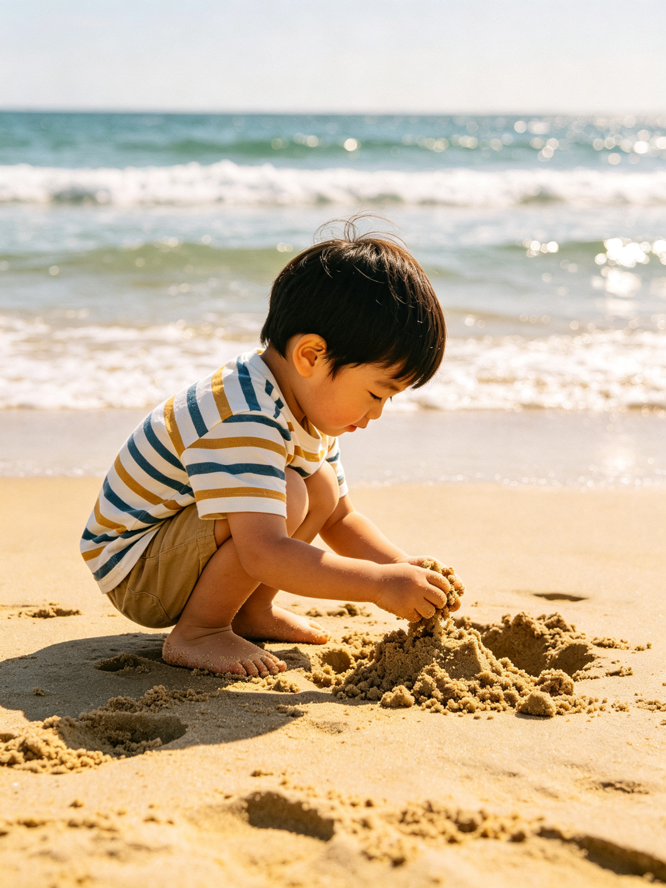
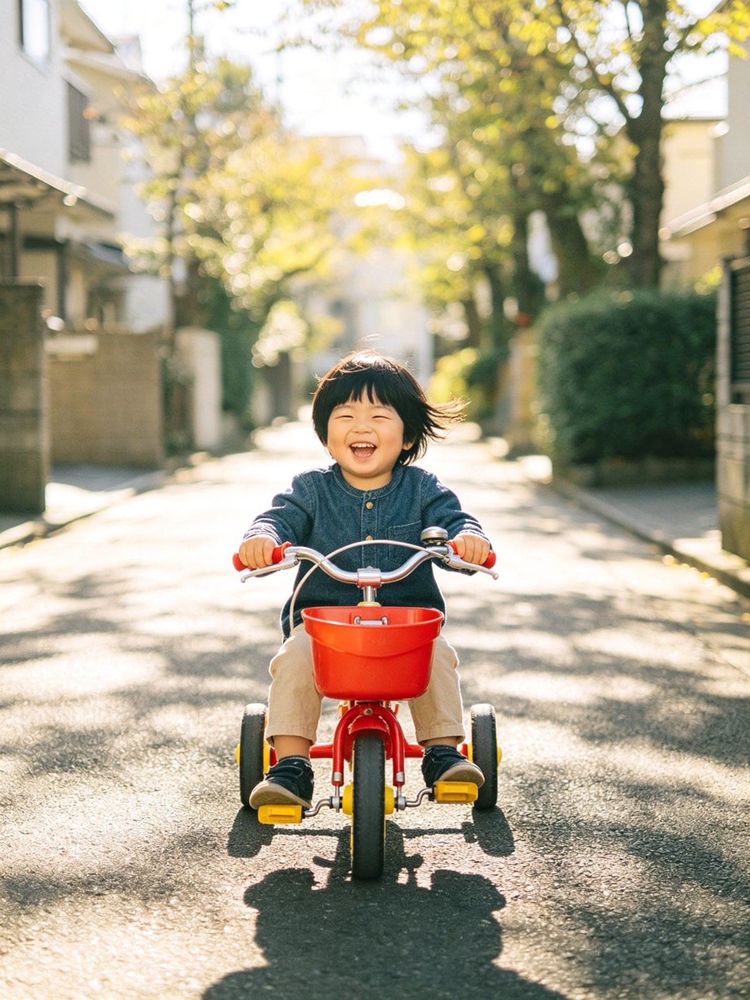
第一次看海，你蹲在沙滩上挖了一下午的沙坑，郑重地说要把整个太平洋装进去。回家后你骑着自己那辆会“滴滴”叫的小三轮车，在小区里转了一圈又一圈，像骑着一匹威风的小马。
五岁 · 速度与画笔
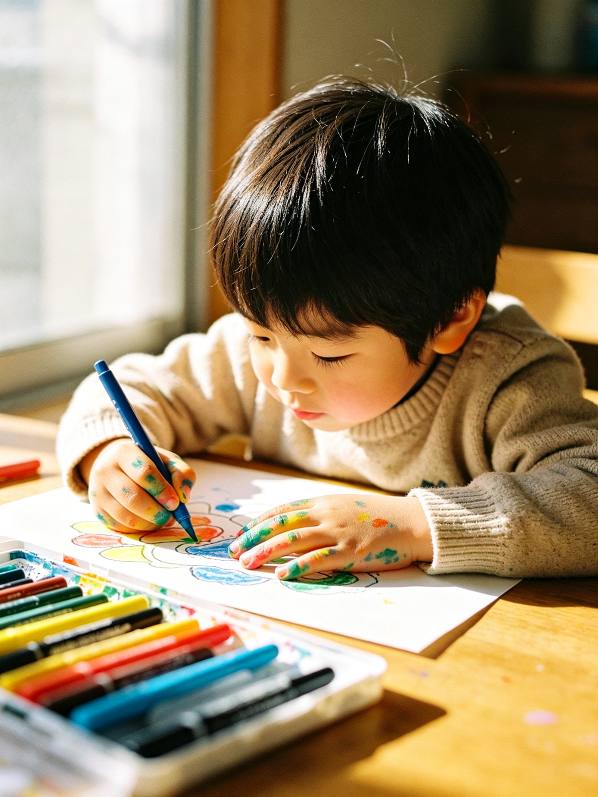
平衡车到手的第一天，你就学会了“飞”。摔倒三次，爬起来四次，膝盖上的淤青是你勇敢的勋章。而安静的午后，你也能乖乖趴在桌上画很久——你说画的是“一家四口”，可我们怎么数都只有三个人。后来才明白，第四个人，是你一直念叨的小狗。
六岁 · 小学一年级

小学开学那天，你站在校门口朝我们挥手，像个小大人，背影小小的，却走得稳稳的。秋游时你捡了一片最红的枫叶带回家，小心翼翼地夹进语文书里，扉页上歪歪扭扭写着五个字：“我的第一片秋天”。
7 — 12 岁 · 世界在脚下展开
七岁 · 领奖台与黑白键
校运会六十米，你跑了第三名，却比第一名还高兴，因为那是你第一次站上领奖台。练琴的你坐不住，可每次弹完《致爱丽丝》都要回头问：“妈，我是不是很厉害？”——是的，你永远是。
八岁 · 山野与对弈
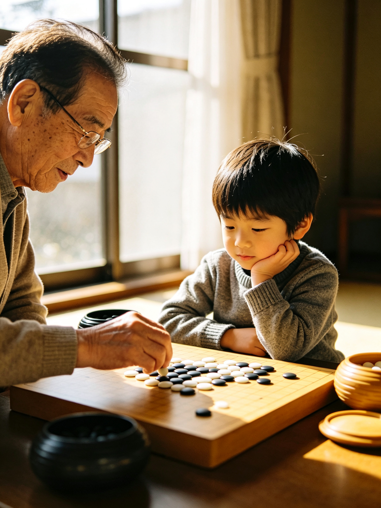
夏令营的第一晚，你躲在帐篷里用手电筒给家里发短信：“妈妈，星星好多。”爷爷教你下围棋，你输了一整个夏天，却在秋天赢了他第一局。那天爷爷喝了口茶，慢悠悠地说：你长大了。
九岁 · 泳池与十万个为什么
你学游泳，呛了水也不肯上岸，教练说你“倔得像个石头”。而图书馆里，你抱着《十万个为什么》能坐一整个下午，回家路上还在问：“为什么星星会眨眼睛？”——孩子，这个世界还有很多答案，等着你去问。
十岁 · 成长礼与山巅
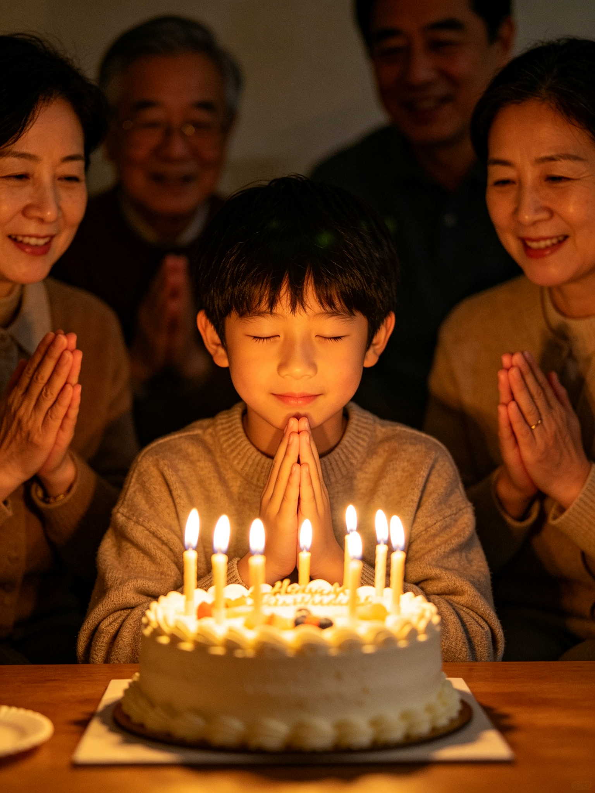
十岁成长礼上，你穿上那件绣着云纹的中式礼服，郑重得像个小书生。我们一起去黄山，你比谁都爬得快，站在山顶张开双臂喊：“看，世界好大！”那一刻我们知道，你已经不是那个需要牵手才能走路的孩子了。
十一岁 · 篮球与朋友
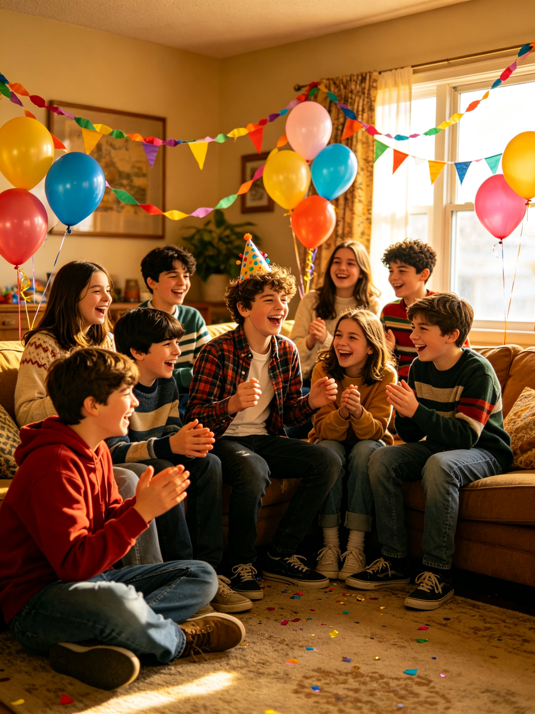
你迷上了篮球，放学后总要练到球场熄灯。生日那天，你把朋友们请进家里，蛋糕上的蜡烛刚点着，你们已经开始互相抹奶油。客厅打扫了三遍，可我们都觉得，那是家里最热闹的一天。
十二岁 · 小学毕业
小学毕业照上，你笑得露出八颗牙齿。九月，你背着书包走进中学的大门，回头朝我们挥了挥手，步伐比想象中坚定。十二岁，你开始学会“告别”，也开始学会“出发”。
13 — 18 岁 · 奔赴各自的远方
十三岁 · 军训与远行
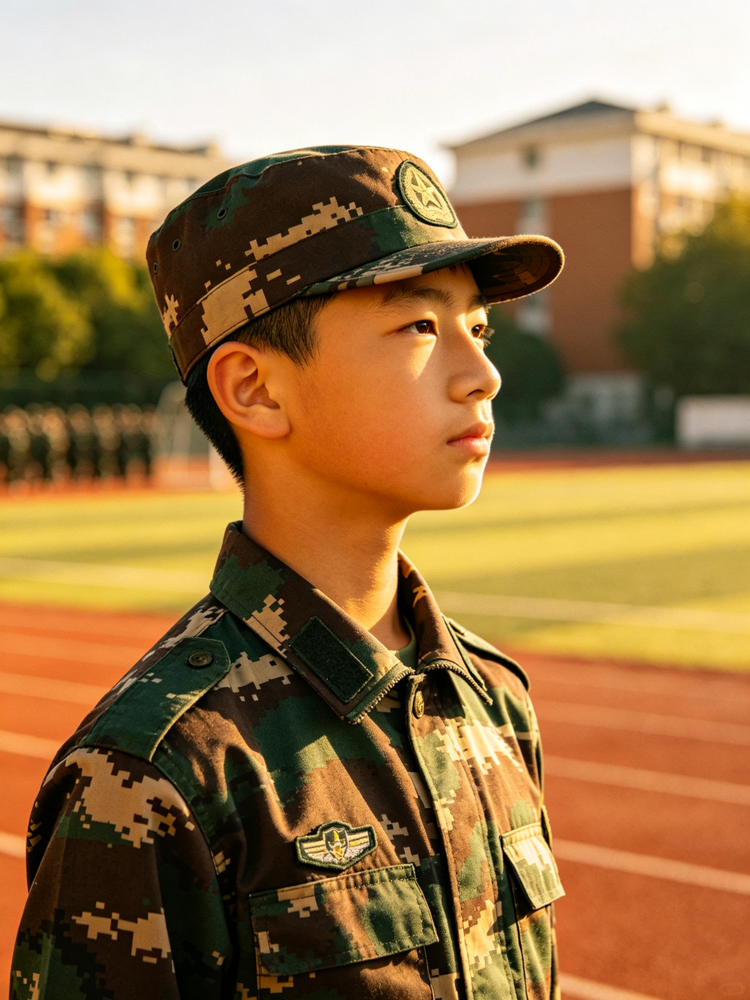
军训回来，你晒黑了一圈，站姿却笔挺得像一棵小松树。那年你学会了骑车远行，第一次独自骑到十公里外的古镇，回来时兴高采烈地跟我们讲一路的风景。十三岁，你开始有自己的远方了。
十四岁 · 雪场与琴弦
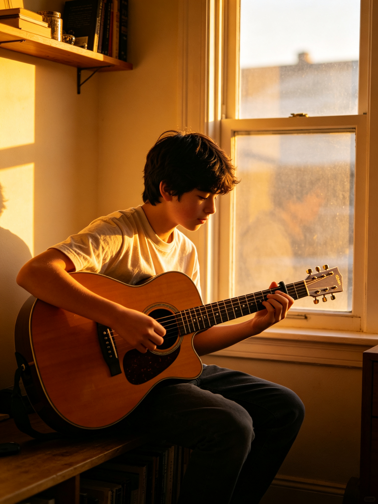
你第一次滑雪就敢从中级道冲下来，摔了七八个跟头，爬起来时笑得最灿烂。那年初秋你抱起吉他，说要学一首歌弹给全家听。手指磨出了茧，但《晴天》响起的那一刻，我们都安静了。
十五岁 · 夏天与远方
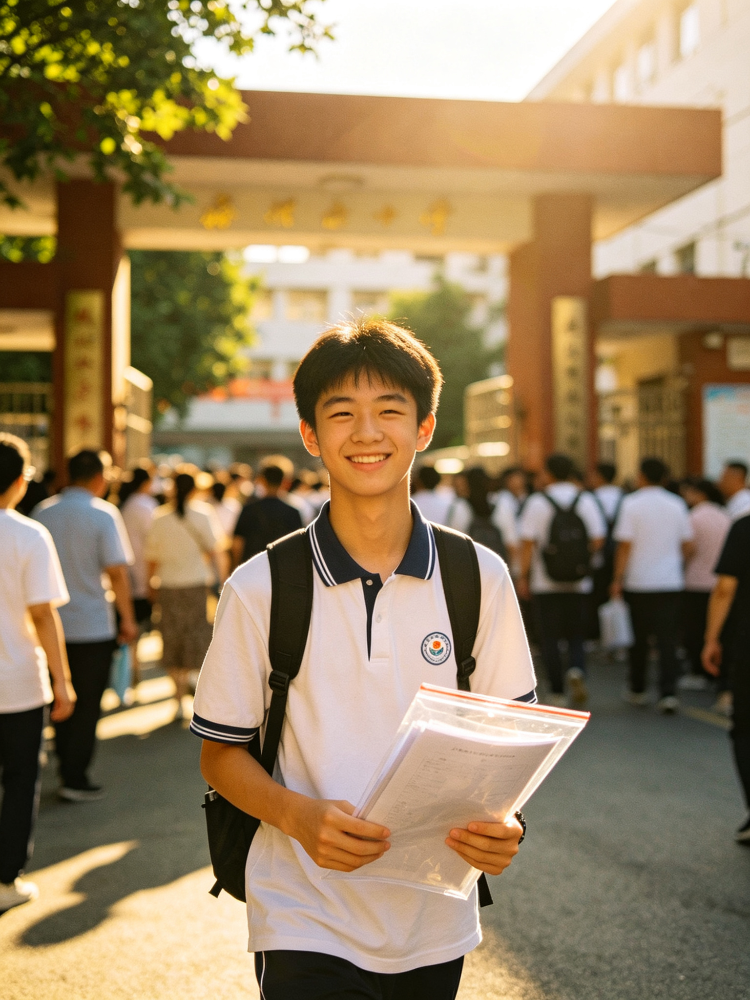
中考结束那天，你走出考场时如释重负的笑，是我们见过最轻快的表情。毕业旅行去海边，你站在礁石上看海看了很久，一句话也没说。也许有些心事，该留给大海。
十六岁 · 高一那年
高一的你，一边在图书馆里挑灯夜战，一边报名了校园演讲比赛。站在聚光灯下的那一刻，你声音平稳、目光坚定。台下有人举着手机录像——是妈妈，她录着录着，就哭了。
十七岁 · 成人礼前夜
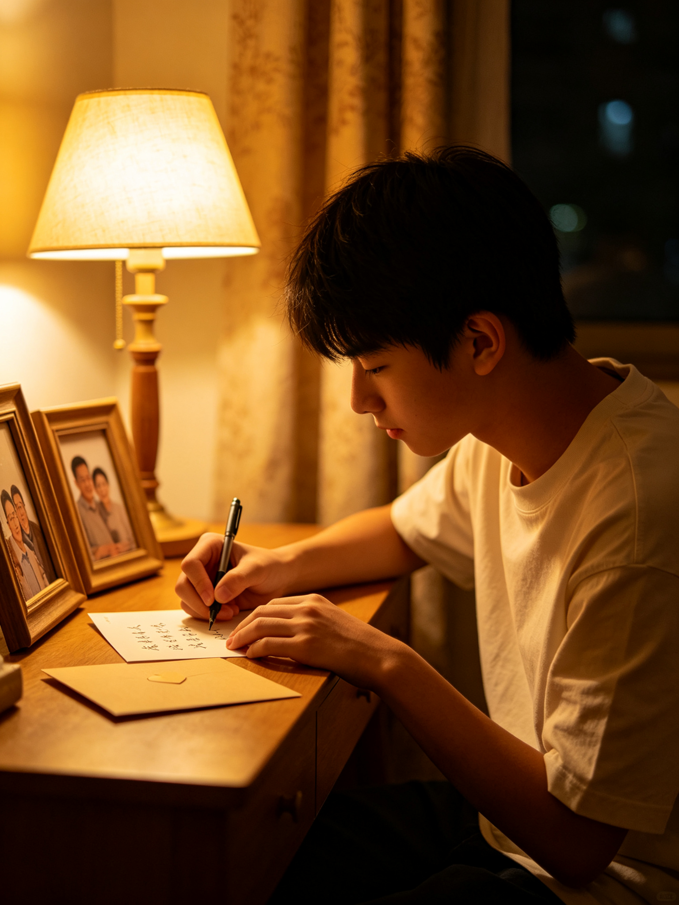
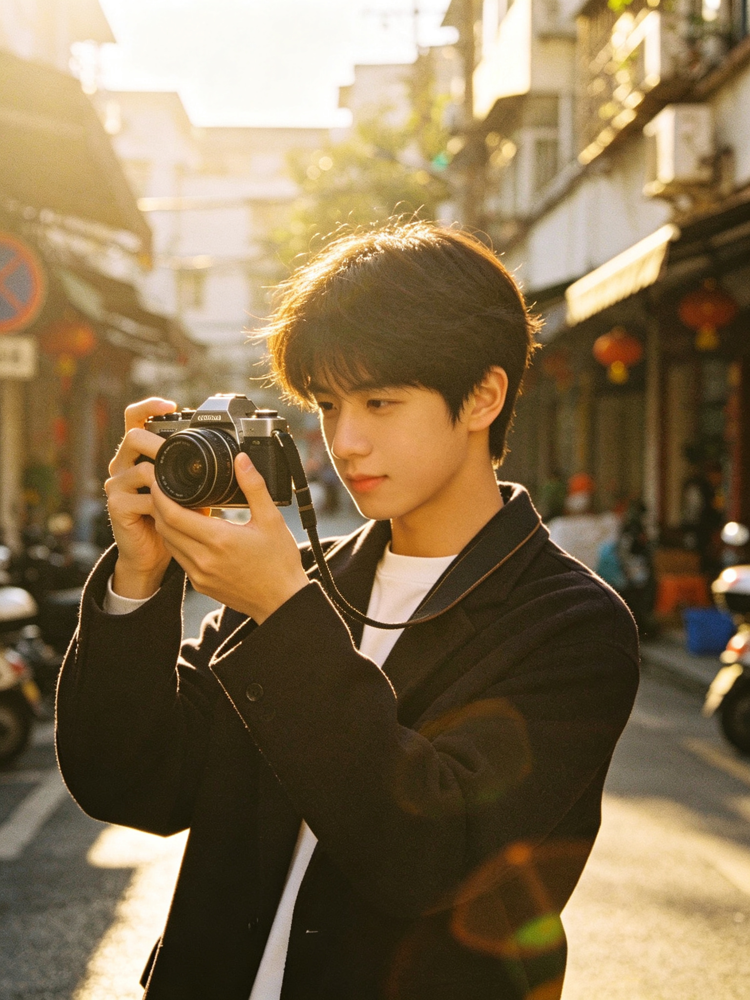
成人礼前夜，你坐在台灯下写卡片，写了很久很久。你开始喜欢上摄影，举着相机在老街巷里走一下午，回家给我们看你的“作品”。我们忽然意识到，你的镜头里，已经有了自己的世界。
十八岁 · 去更远的地方
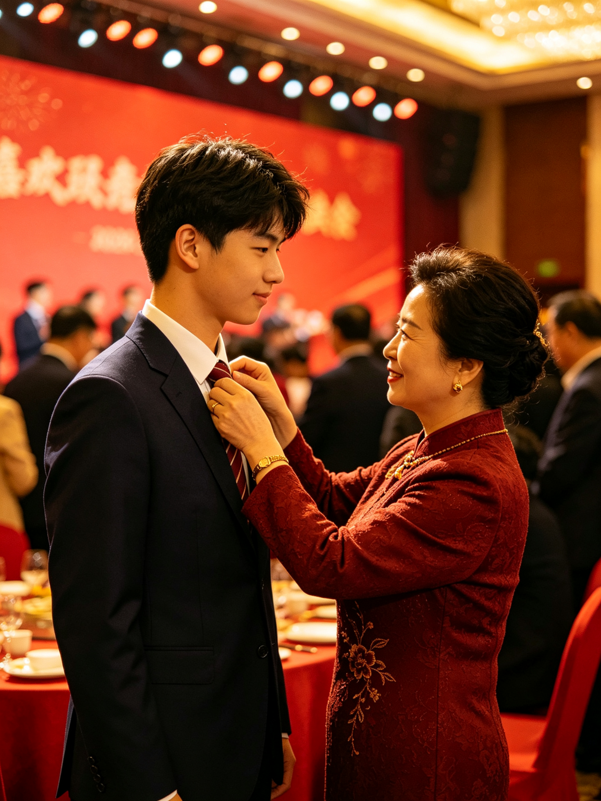
十八岁，你穿上西装，站在成年礼的灯光下，比我们想象中更高、更挺拔。你即将去远方求学，拖着行李箱站在站台上，回头朝我们笑。那一刻我们忽然明白：所有的陪伴，都是为了让你走得更远。
亲爱的孩子：
写这封信的时候，窗外正下着雨，和你出生的那个夜晚一样。十八年，足够一棵树长大，足够一个孩子，长成他自己的模样。
我们翻看这些照片，像翻看一条来时的路。你曾经那么小，小到可以整个儿蜷在我们的臂弯里；如今你站在成年礼的灯光下，已经比爸爸还高了。
我们没有什么宏大的道理要讲。只想告诉你：世界很大，路很长，你尽管去闯。摔倒了，就爬起来；迷路了，就看看来时的方向。而我们，永远在这里。
愿你这一生，明亮、坦荡、自由、健康。愿你走过的每一步，都算数。
永远爱你的爸爸 & 妈妈
2025 年 6 月